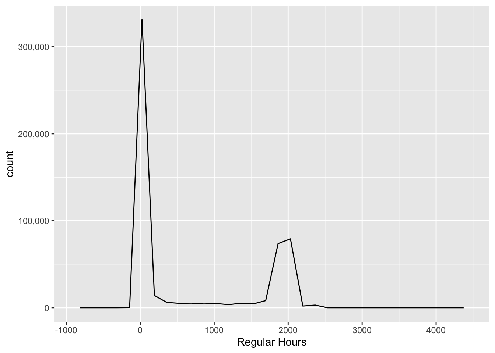
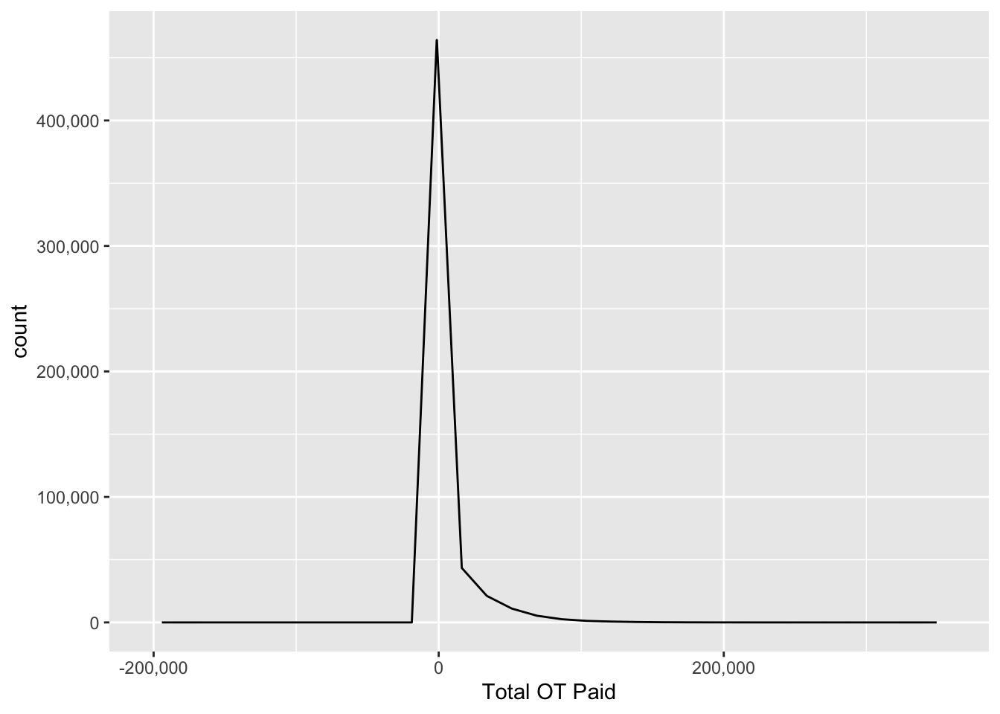
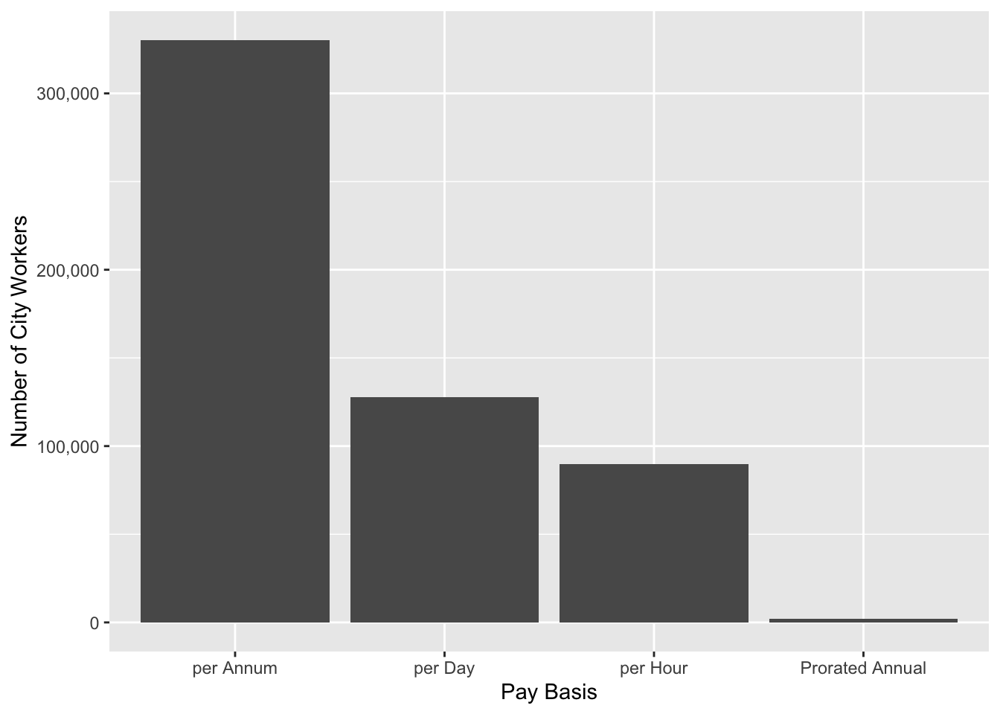
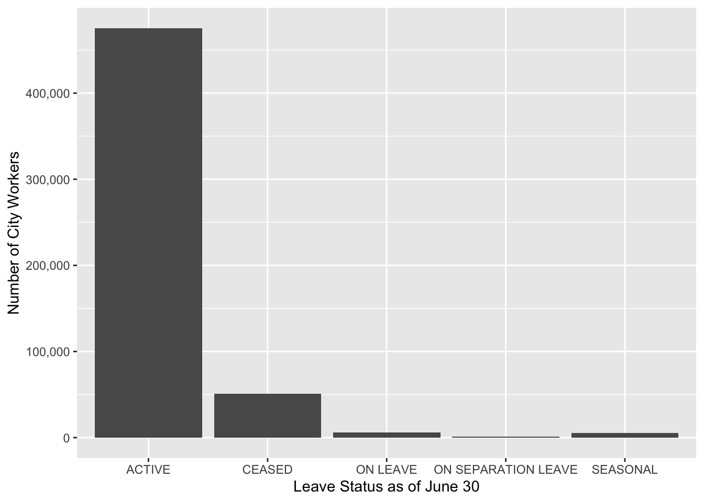
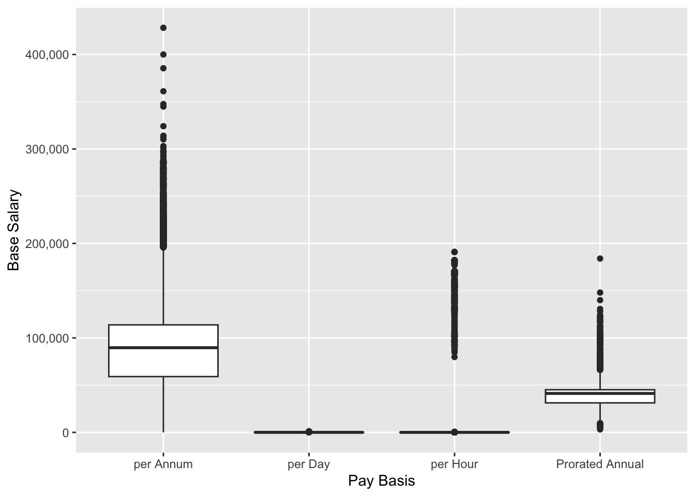
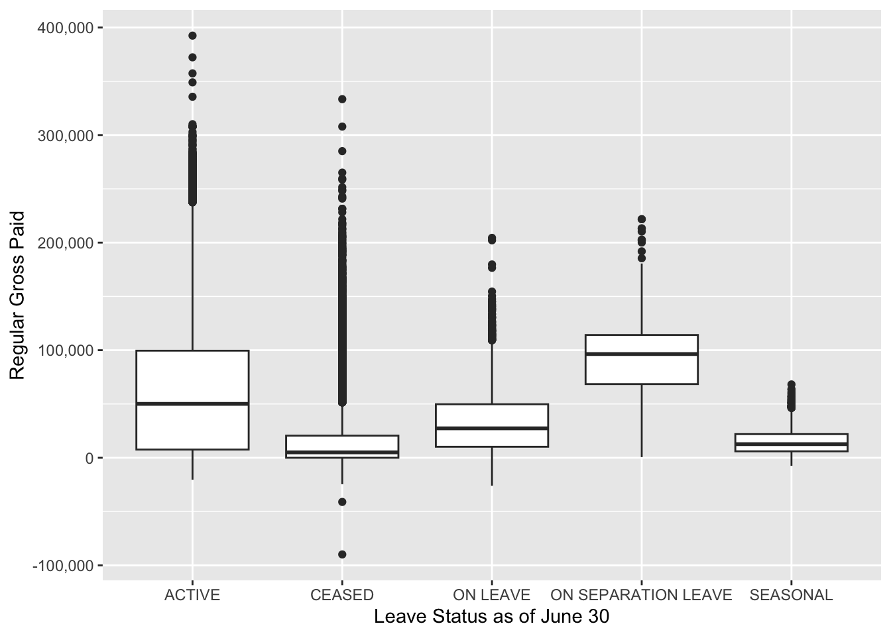

Analyzing NYC Payroll Data for Fiscal Year 2025
About The Data
The data shows annual salary and job details for each New York City employee from 2014 to 2025. It is collected by the NYC Office of Payroll Administration (OPA). However the data was filtered to only data in the five boroughs of NYC (Bronx, Brooklyn, Manhattan, Queens, Staten Island) and from the fiscal year 2025. Each row represents a city employee salary per fiscal year.
The original dataset can be found here.
Data Definition
Fiscal Year: The data was wrangled to have only 2025 data.Payroll NumberAgency Name: The Payroll agency that the employee works forLast Name: Last name of employeeFirst Name: First name of employeeMid Init: Middle initial of employeeAgency Start Date: Date which employee began working for their current agencyWork Location Borough: Borough of employee’s primary work location. Filtered to include only NYC boroughs (Bronx, Brooklyn, Manhattan, Queens, Staten Island)Title Description: Civil service title description of the employeeLeave Status as of June 30: Status of employee as of the close of the relevant fiscal year: Active, Ceased, or On LeaveBase Salary: Base Salary assigned to the employeePay Basis: Lists whether the employee is paid on an hourly, per diem or annual basisRegular Hours: Number of regular hours employee worked in the fiscal yearRegular Gross Paid: The amount paid to the employee for base salary during the fiscal yearOT Hours: Overtime Hours worked by employee in the fiscal yearTotal OT Paid: Total overtime pay paid to the employee in the fiscal yearTotal Other Pay: Includes any compensation in addition to gross salary and overtime pay, ie Differentials, lump sums, uniform allowance, meal allowance, retroactive pay increases, settlement amounts, and bonus pay, if applicable.
Bias in the Data
The borough of Staten Island is not at all represented in the data, and while it is the least populated borough, it still has municipal workers who are important to the data visualizations and interpretations.
Summary statistics
Quantitative variables
Regular Hours Worked
# A tibble: 1 × 3
Mean Median SD
<dbl> <dbl> <dbl>
1 659. 0 890.Total OT Paid

# A tibble: 1 × 4
Mean Median SD Mode
<dbl> <dbl> <dbl> <dbl>
1 5311. 0 15390. 0Ordinal variables
Pay Basis

# A tibble: 1 × 1
Mode
<chr>
1 per AnnumCategorical variables
Work Location Borough

# A tibble: 1 × 1
Mode
<chr>
1 MANHATTANLeave Status as of June 30

# A tibble: 1 × 1
Mode
<chr>
1 ACTIVEPotential relationships
The box plot below implies that workers who are paid on per Annum basis are typically paid much more than workers paid per Day or Hour or Prorated Annual.

The boxplot below implies that typically, workers outside Manhattan work more hours than the typical Manhattan municipal worker. However, the Manhattan plot has many dots implying that the lower median work hours may be related to the fact that Manhattan has the most municipal workers.

The boxplot below implies that the ceased and seasonal workers, who get paid a typically lower income than the typical active and on-separation-leave workers, may have left their jobs in pursuit of higher regular annual salaries.
